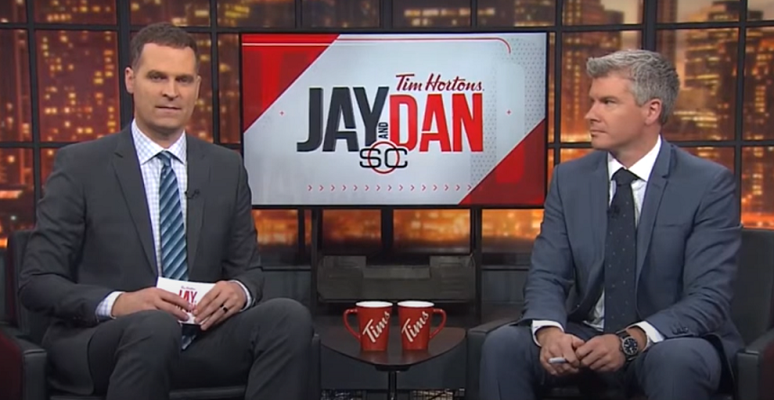
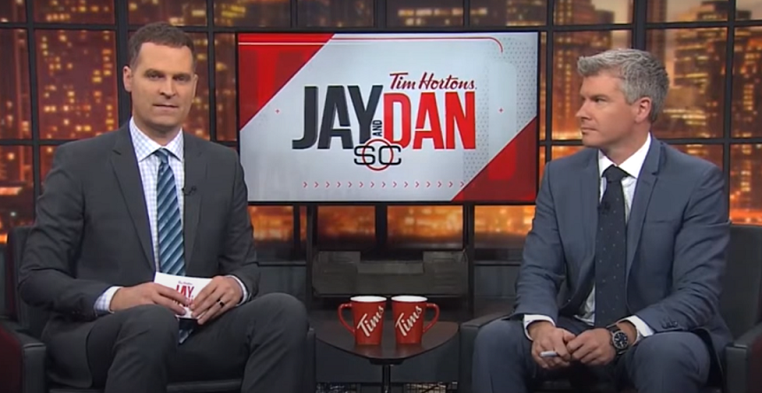
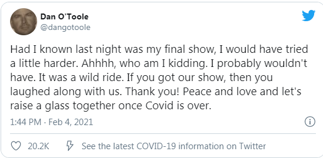
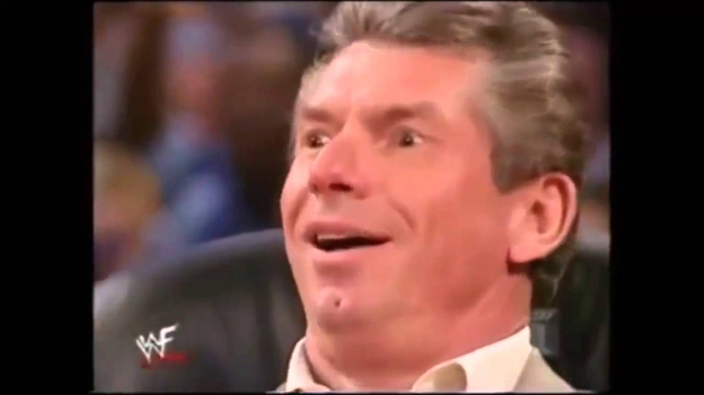
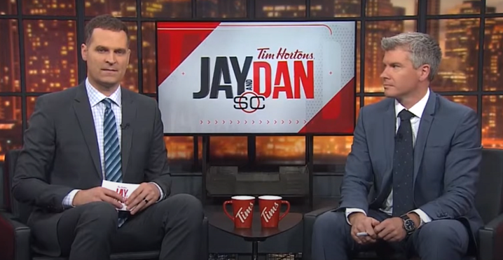

Bell Media Commits Genocide Against Sports Journalists
February 13th, 2021
Okay not really, but the TLDR is that they got 123 million in COVID relief that was specifically set aside for their employees literally the day before. Then they go and fire hundreds of employees, despite being a profitable corporation either way. Even more than that, they started this tax writeoff #letstalkaboutit where they encouraged people to open up about their mental health issues, before firing hundreds of their employees, many of whom had to find out from social media.
 I mean it's just so evil that it's actually kind of funny.
Kelowna Now:
TDC_ARTICLE_START
Hundreds of people have been laid off by Bell Media this week and that includes a trio of TSN personalities that Canadian sports fans are quite familiar with.
It was revealed today that Dan O’Toole and Natasha Staniszewski were both let go by TSN, which follows the news from Wednesday that Brent Wallace was no longer with the network.
TDC_ARTICLE_STOP

I mean it's just so evil that it's actually kind of funny.
Kelowna Now:
TDC_ARTICLE_START
Hundreds of people have been laid off by Bell Media this week and that includes a trio of TSN personalities that Canadian sports fans are quite familiar with.
It was revealed today that Dan O’Toole and Natasha Staniszewski were both let go by TSN, which follows the news from Wednesday that Brent Wallace was no longer with the network.
TDC_ARTICLE_STOP
Jay Onruit on left, Dan O'Toole on right
I have to admit, I always found Jay and Dan to be really annoying, bordering on insufferable. I don't really watch TSN except sometimes while eating, so this doesn't really affect me. 95% of these people have shitty disgusting politics, but this is definitely a fight between shitty people, sports journifas, and shittier people who have way more actual power, tech conglomerates.
TDC_ARTICLE_START
The news seemed to catch O’Toole, who was on air last night co-hosting Sportscentre with Jay and Dan, by surprise.

Today marks the end of O’Toole’s second stint with TSN.
He and Jay Onrait began co-hosting weekday Sportscentre broadcasts in 2003 and did so until they left for an opportunity at Fox Sports 1 in Los Angeles in 2013.
They made a triumphant return to TSN in 2017 and have been hosting Sportscentre with Jay and Dan together since then.
TDC_ARTICLE_STOP
BTW the whole mental health thing starts to get weirdly hilarious. Dan O'Toole himself had a mental health breakdown in July of 2020, where he tweeted that his daughter was being kidnapped, before police had to come in and confirm that no, his daughter was with her mother the whole time and that Dan had been aware of that. I didn't follow it all that closely, but it kind of sounded like Dan O'Toole was having some Marital Problems and snapped publicly. He took some time off.
I bring this up just to remind you that Bell Media was doing their whole #letstalkaboutit bullshit campaign, and Dan had some great things to say about that.
Trade Rumours
TDC_ARTICLE_START
"Let's talk. We should. Let's talk," said O'Toole. "Does it mean anything without a hashtag? Oh right. Wrong day. So I have to mention the company for it to mean anything? But what if I was fired by the company that makes the hashtag about mental health? Do I still include them in the hashtag?"
"I'm so confused. So I have to wait for a specific day, and then mention a specific company, and only then, will the company give money to mental health? Only when I mention them? But shouldn't they just do it, since they are a billion dollar company? Oh. So they look good? Oh," O'Toole continued.
"And isn't being fired, I don't know, kind of bad for mental health? Shit. Didn't include the hashtag. With the company name. So these tweets don't count?"
TDC_ARTICLE_STOP

If you're wondering why I can't show you those tweets, it's because he deleted them. But good god does he bring the heat. It's so rare to see publicly these Globo Homo Corps get the tongue lashing they deserve. These fake charitable garbage people. Getting a tax writeoff for positive publicity while causing actual mental health issues by firing their workers. Causing even more mental health issues due to the message this sends to the rest.
It's so evil that it's actually kind of difficult not to just laugh. Cartoonishly evil. And the timing is so bad that I can't help but think they just said "fuck it, we want to show the workers who's boss." Like the purpose isn't good publicity, it's intentionally bad publicity. It's about sending the message that no matter how unpopular or despicable their actions, the unpopularity of it shows you that you are the peasants, and they are the privileged.
Unfortunately now I have to go and look up who runs Bell Media. Early results are promising.

I mean it's just so evil that it's actually kind of funny.
Kelowna Now:
TDC_ARTICLE_START
Hundreds of people have been laid off by Bell Media this week and that includes a trio of TSN personalities that Canadian sports fans are quite familiar with.
It was revealed today that Dan O’Toole and Natasha Staniszewski were both let go by TSN, which follows the news from Wednesday that Brent Wallace was no longer with the network.
TDC_ARTICLE_STOP
